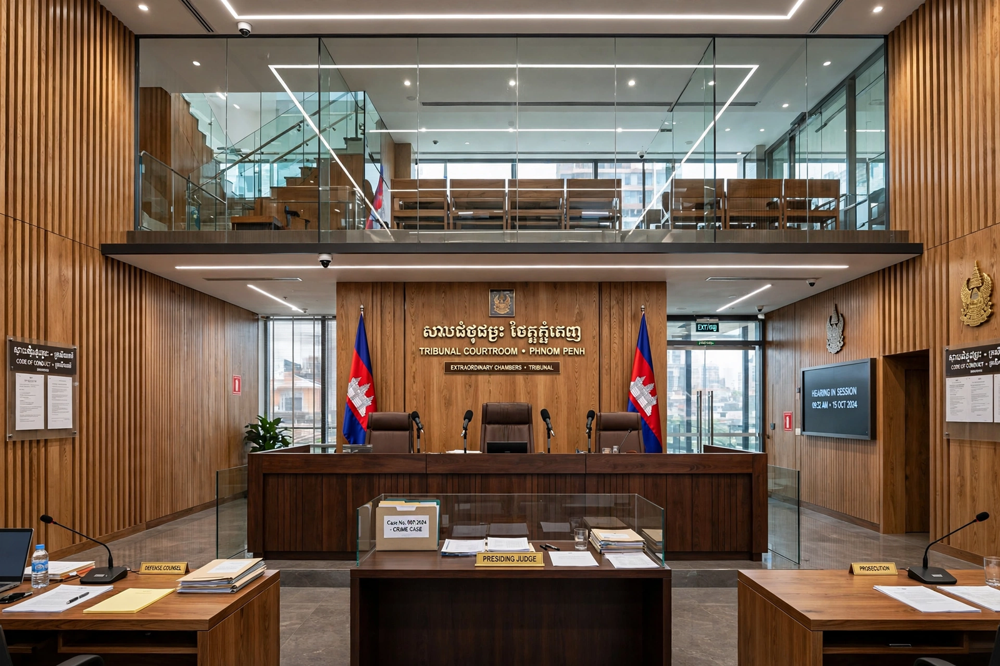

| Extraordinary Chambers in the Courts of Cambodia (ECCC) | |
|---|---|
| Established | 2001 (law); operational from 2006 |
| Location | Phnom Penh, Cambodia |
| Type | Hybrid criminal tribunal (Cambodian–international) |
| Jurisdiction | Crimes committed in Cambodia, 17 April 1975 – 6 January 1979 |
| Composition | Majority Cambodian judges with international judges and prosecutors |

The Extraordinary Chambers in the Courts of Cambodia (ECCC), commonly known as the Khmer Rouge Tribunal, is a hybrid court established by the Cambodian government and the United Nations to try senior leaders and those most responsible for the crimes committed during the Khmer Rouge regime of Democratic Kampuchea (1975–1979).
The court's panels combine Cambodian and international judges, with a supermajority rule requiring at least one international vote for a conviction, designed to combine national ownership with international standards. Trials are conducted in Khmer, English and French, and civil parties may participate directly.
In Case 001, Kaing Guek Eav, known as Duch, commandant of the S-21 prison, was convicted in 2010 and sentenced to life imprisonment on appeal. In Case 002, Nuon Chea and Khieu Samphan were convicted of crimes against humanity in 2014 and of genocide in 2018. Other defendants, including Ieng Sary and Ieng Thirith, died or were found unfit before judgment.
The tribunal has been praised for bringing a measure of justice to survivors of the genocide and criticised for its cost, slow pace and alleged political interference in further cases. Judges and staff wound down the court's remaining work in the 2020s.